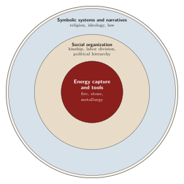
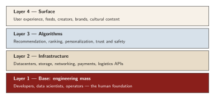
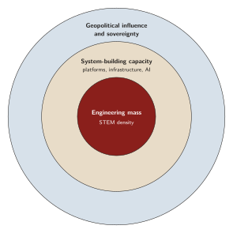

A monograph · Version 0.2
The Oldest Law of Power
Technology, Human Hierarchy, and the Architecture of the Emerging Global Order
December 2025; revised November 2026
Abstract
Technology has always been the primary driver of hierarchy within human societies. From the earliest stone tools to modern artificial intelligence systems, the capacity to create and wield technical innovations has consistently determined which groups ascend and which decline. Although contemporary discourse often frames technological disruption as a novel phenomenon, the historical record shows that technological capacity has consistently structured civilizational hierarchy. The twenty-first century magnifies this pattern: modern systems—artificial intelligence, advanced computation, semiconductor fabrication, autonomous platforms—require engineering capacities beyond the abilities of individuals or nations with limited STEM ecosystems.
This monograph examines the deep anthropological roots of technological hierarchy, analyzes the modern imbalance of engineering talent among global blocs, explores the structural implications of platform ecosystems such as TikTok, Douyin, CapCut, and Jianying, and outlines an emerging world order shaped by engineering density rather than ideology or traditional geopolitics. The three-tier map is then qualified: institutions, the quality of training as well as its volume, and specialized small-state system-builders such as Taiwan, the Netherlands, South Korea, and Israel all matter, and they refine rather than repeal the central claim.
Introduction
Human beings are often portrayed as symbolic animals, defined by language, ritual, myth, and institutions. From an evolutionary and materialist perspective, however, humans are distinguished most sharply by their ability to externalize cognition into tools. This capacity, which began with the shaping of stone and the control of fire, laid the foundation for every subsequent rise in human complexity. Technology did not emerge as a cultural accessory; it defined the human niche. Once humans began altering their environment through engineered artifacts, the trajectory of the species diverged sharply from all other primates [1][2].
In modern discourse, technology is frequently treated as a domain separate from politics, economics, or culture. This separation is artificial. Technology shapes economic productivity, military capacity, cultural forms, demographic patterns, and even psychological dispositions. Every major civilizational transformation—agricultural settlement, urbanization, writing, metallurgy, industrialization, electrification, digitization—has been technologically driven (Diamond 1997; Arthur 2009). Yet societies systematically underestimate this force. They attribute success to moral virtue, divine favor, political genius, or national character, while the structural role of engineering remains under-analyzed.
This monograph advances three main claims. First, technology is not a new source of disruption; it is the oldest law of human hierarchy. Second, what is new in the twenty-first century is the scale at which this principle now operates and the degree to which engineering has become the central limiting factor in national power. Third, as technological systems become more complex, nations with large, coordinated pools of STEM talent gain advantages that cannot be compensated for by ideology, wealth, or military ambition alone. The global order is thus reorganizing around engineering density. That reorganization is not a simple three-rung ladder: some smaller states occupy chokepoints in the technological stack, and institutions and educational quality shape how raw talent is converted into system-building capacity. These qualifications, developed later, do not overturn the central claim.
To make this argument, the monograph proceeds in several steps. Section 2 examines the anthropological and evolutionary origins of technological hierarchy. Section 3 discusses why societies consistently misinterpret the true sources of their power and undercredit technology. Section 4 explores the modern crisis of complexity and the collapse of the “individual genius” model as a sufficient explanation of technological change. Section 5 analyzes the global imbalance of STEM pipelines, focusing on demographic and institutional patterns and on the best available comparative headcounts. Section 6 examines the ecosystem dynamics of ByteDance platforms as exemplars of technological sovereignty, paying particular attention to TikTok, Douyin, CapCut, and Jianying, and updating the account of TikTok’s U.S. restructuring to verified reporting as of 2026. Section 7 outlines a revised global stratification into system-builders, specialized chokepoint builders, system-consumers, and system-dependents. Section 8 takes up the principal counterarguments—institutions, quality versus headcount, and small-state system-builders. Section 9 considers policy and research implications. The conclusion reflects on technology as the enduring substrate of human hierarchy, while rejecting a crude technological determinism, and sketches a research agenda for the political economy of technological systems.
Technology as an Evolutionary and Anthropological Foundation
The place of technology in human evolution is well established. Homo habilis, Homo erectus, and Neanderthals each used tools, but only Homo sapiens turned tool-making into a scalable, transmissible cultural system. Archaeological evidence suggests that technological sophistication, rather than purely genetic superiority, played a decisive role in the demographic expansion of sapiens across Eurasia (Mithen 1996; Gamble 2013). The introduction of blade technologies, composite tools, and projectile weapons gave humans the ability to hunt larger prey, defend territory, and compete against rival hominin species.
Several principles follow from this early technological edge. First, technology amplifies energy conversion. Fire made food more digestible and safer, freeing metabolic resources for brain expansion and enabling new social time at night (Wrangham 2009). Second, technology extends sensory and motor capacities: spears extended reach; clothing extended habitable zones; containers extended storage and mobility of resources. Third, technology reorganizes social structures. Tools required teaching, imitation, and coordinated labor, which fostered more complex social organization and cultural transmission. Finally, technology accumulates. Unlike genetic traits, tools and techniques compound across generations, a process described as cumulative cultural evolution.

Figure 1 summarizes this relationship schematically. Technology is the innermost layer of human adaptation. Social institutions, legal frameworks, and cultural narratives arise on top of that layer. When tools change, everything outward must eventually adjust.
From the perspective of human competition, the implication is clear: groups with superior tools consistently outperform groups with inferior ones. This is not merely a theory of greed or aggression. It is a structural observation borne out across hundreds of thousands of years of archaeological and anthropological evidence.
From Tools to Techniques to Institutions
As tool repertoires expanded, they became increasingly embedded in institutional forms. Agricultural technologies—plows, irrigation systems, storage facilities—required collective management. Metallurgical expertise demanded training, secrecy, and specialized craft guilds. Over time, technological proficiency became inseparable from institutional complexity (Perez 2002).
Anthropologists and historians of technology have repeatedly shown that technical innovation is both constrained and enabled by institutional structures. Yet the causal arrow also runs in the opposite direction: once a society adopts a new technological regime, its institutions must adapt or be replaced. This mutual shaping of technology and institutions is central to understanding why some societies achieve prolonged periods of dominance while others stagnate or collapse [4].
Technology and the Elimination of Ecological Constraints
Technology can be understood as a process of systematically removing or softening ecological constraints. Hunting technologies reduce dependence on proximity to prey. Agricultural tools reduce dependence on seasonal abundance. Energy technologies reduce dependence on geographic sources of fuel. Information technologies reduce dependence on physical co-presence and slow communication.
Each wave of technological innovation thus offers a new way of decoupling human life from the immediate environment, but only for those groups able to deploy the relevant tools. This decoupling is uneven, which is why technology consistently generates hierarchy and not merely general uplift.
Why Technology Rarely Receives Historical Credit
Despite its decisive role, technology consistently fades from public narratives of power. Ancient societies attributed success to the gods; medieval societies credited kings and prophets; modern political narratives emphasize ideology, constitution, or culture. Technological determinism is often dismissed as reductionist. Yet historical patterns show a close correlation between technical capacity and civilizational ascendancy (Diamond 1997; Pomeranz 2000; Landes 1998). That correlation is not the whole story—a point taken up in Section 8, where the institutionalist argument of Acemoglu and Robinson is treated as a serious counterclaim rather than as support for a technological reading of history [9].
Table 1 offers a stylized summary of major technological transitions and associated civilizational shifts.
| Transition | Key technologies | Representative civilizational effects |
|---|---|---|
| Early agrarian | Domestication of plants and animals; basic irrigation; storage | Emergence of settled communities; surplus production; stratification; city-states in Mesopotamia and the Nile Valley |
| Classical empires | Ironworking; road-building; siege engines; coinage | Large-scale empires (e.g., Rome, Han China); standardized administration; long-distance trade; standing armies |
| Early modern | Oceanic navigation; gunpowder weapons; printing; scientific mathematics | European global expansion; colonial empires; Reformation; scientific revolution |
| Industrial | Steam engine; mechanized textiles; railways; electricity | Urbanization; mass production; new social classes; imperial competition; global trade integration |
| Digital | Semiconductors; networking; software; AI; platforms | Global information networks; financialization; platform capitalism; data-driven governance; algorithmic media |
Several reasons explain why technology rarely receives the central credit it deserves.
First, human self-image prefers moral explanations. Societies favor stories that elevate virtue, courage, or destiny over mechanical advantage. Rome preferred myths of Roman discipline and civic virtue over analyses of Roman metallurgy and logistics. Confucian bureaucrats in imperial China emphasized moral order over the role of technologies like paper, printing, and gunpowder.
Second, technological systems are invisible in daily life. Aqueducts, roads, steam engines, fiber-optic cables, and recommendation algorithms recede into the background as infrastructure. Their importance becomes clear primarily when they fail. The everyday experience of citizens is mediated by institutions and narratives, not by direct engagement with technical systems.
Third, political elites benefit from the illusion of agency. Attributing success to leaders or foundational texts reinforces political legitimacy. Acknowledging engineering as the true backbone would shift prestige from rulers toward technologists and anonymous laborers. This would undermine narrative control, and so it is rarely encouraged.
Finally, technological evolution is cumulative and collective. It is difficult to attach heroic narratives to systems created by thousands of unnamed workers and incremental improvements. Even when individual inventors are celebrated, they often represent the visible tip of a much larger collaborative iceberg (Kelly 2010).
For these reasons, societies consistently distort the drivers of their own success. Yet when viewed through a materialist and evolutionary lens, the pattern becomes unmistakable: technology is the substrate of civilization, and all higher cultural forms sit upon it [4]. That claim describes a structural dependence, not a denial of politics, culture, or choice—a distinction that matters when the argument is later distinguished from crude determinism.
Complexity in the Modern Era: The End of the Lone Genius
A major difference between ancient and modern technological regimes is the scale of complexity. In earlier eras, individual inventors—Archimedes, Gutenberg, Faraday, Tesla, Turing—could reshape technological landscapes via discrete breakthroughs. Today, no single individual can comprehend, let alone construct, a modern AI model, semiconductor fabrication facility, or national cloud infrastructure.
These systems require:
distributed teams of thousands of engineers and technicians,
multi-layered version control and software tooling,
globalized supply chains for rare materials and components,
iterative deployment pipelines with continuous integration and delivery,
algorithmic tuning at scale based on real-time data,
massive data management and storage,
and unprecedented levels of operational coordination.
The myth of the lone genius collapses under these conditions. Even the most brilliant modern engineer cannot single-handedly build an autonomous vehicle stack or a state-of-the-art language model (Russell and Norvig 2020; Tegmark 2017). Instead, power now belongs to institutions and nations with sufficient engineering depth to sustain these systems over time.
Figure 2 illustrates the causal chain linking population, education, engineering mass, system-building capacity, and geopolitical power. The bottleneck of the twenty-first century is not ingenuity but human resources. The value of STEM labor has risen far faster than the supply. Firms at the frontier of AI, semiconductor design, and platform infrastructure compete for engineers capable of managing large-scale distributed systems, machine learning pipelines, and algorithmic architectures. Official U.S. wage data show how tight that market has become: in May 2025, the median annual wage for software developers was $135,980, the lowest tenth earned less than $82,460, and the highest tenth earned more than $214,670 (U.S. Bureau of Labor Statistics, n.d.). Compensation at the upper end of the distribution—and, a fortiori, in scarce frontier roles—is a signal that engineering scarcity now constrains strategic possibility.
Division of Cognitive Labor in High-Complexity Systems
The internal structure of technological organizations has evolved to reflect this complexity. Modern AI and platform companies exhibit a fine-grained division of cognitive labor. Table 2 offers an illustrative breakdown.
| Role type | Primary responsibilities |
|---|---|
| Research scientists | Develop new architectures, algorithms, and theoretical insights; publish cutting-edge work; prototype models |
| ML engineers | Implement, train, and fine-tune models; manage data pipelines; optimize training procedures and hyperparameters |
| Data engineers | Design and maintain data storage, processing, and access systems; ensure data quality, labeling, and governance |
| Infrastructure engineers | Build and maintain underlying compute, networking, and storage systems; ensure reliability and scalability |
| Product engineers | Integrate models into user-facing products; design APIs; balance performance, usability, and security |
| Trust and safety teams | Design and implement content moderation rules; develop detection models; evaluate social and political impacts |
| Operations and SRE | Monitor system performance; handle incidents; ensure uptime and adherence to service-level objectives |
This division of labor underscores that modern technology is the emergent outcome of coordinated activity by many specialists. No single person embodies all necessary skills. Nations lacking large numbers of such specialists are structurally constrained in their ability to build and maintain advanced systems.
The Global STEM Imbalance: Demographic and Educational Realities
The distribution of STEM talent across countries is highly asymmetric. A 2023 analysis by Georgetown University’s Center for Security and Emerging Technology (CSET), using 2020 data, found that China produced about 3.57 million STEM graduates that year, followed by India at 2.55 million and the United States at 820,000—more than four times as many in China as in the United States. Among the remaining countries in CSET’s top eleven were Russia (520,000), Indonesia (300,000), Brazil (238,000), Mexico (221,000), France (220,000), Germany (216,000), Iran (211,000), and Japan (192,000) (Oliss et al. 2023).
CSET adopts the UNESCO and OECD designation of STEM fields—information and communication technology; engineering, construction, and manufacturing; and natural sciences, mathematics, and statistics—and counts graduates across tertiary education, from associate’s degrees through doctorates (Oliss et al. 2023). These headcounts should be read with care. They do not measure the quality of training, the mix of subfields, the share of graduates who enter research or system-building roles, or the institutional capacity that turns degrees into working infrastructure. CSET itself notes that graduate volume “fails to account for other differences in the STEM ecosystems of different countries” (Oliss et al. 2023). South Korea, for example, does not appear among the eleven largest producers under this definition, yet it is a central system-builder in memory semiconductors and a major electronics manufacturer—an early indication that headcount alone does not determine technological power.
A stronger combined comparison—that China produces more STEM graduates than the United States, Europe, Japan, and South Korea together—cannot be verified from CSET’s published top-eleven table, which does not report a complete European or Korean total. What the data do show clearly is China’s and India’s scale advantage over every other listed country.
China: Engineering as National Strategy
China’s leadership has explicitly framed science and technology as central to national rejuvenation. State documents highlight the importance of “indigenous innovation” and “self-reliance” in core technologies. Investments in universities, research institutes, and industrial parks reflect a deliberate attempt to build an engineering-intensive society. The result is a massive and expanding STEM workforce with capabilities in hardware manufacturing, telecommunications, AI, and platform ecosystems.
India: Rising Talent in a Constrained Infrastructure
India’s demographic profile and educational sector have produced large numbers of engineers, particularly in software and IT services. Indian engineers play critical roles in global technology firms. However, domestic infrastructure constraints and institutional fragmentation have limited India’s ability to build indigenous platforms at the scale of China’s ecosystems. Nonetheless, as connectivity, capital, and policy environments evolve, India possesses the raw human capital necessary to become a system-building power.
The United States: High Talent Density, Low Talent Volume
The United States remains a global leader in research, with institutions like MIT, Stanford, and Berkeley driving foundational advances. It also hosts the headquarters of major platform companies (Google, Meta, Amazon, Microsoft). However, the domestic pipeline of STEM graduates is insufficient for the scale of ambition, particularly in AI, semiconductor design, and national infrastructure. This shortfall is partially offset by immigration, as highly skilled engineers from China, India, and other countries staff American firms.
The dependence is not incidental. A 2024 National Academies consensus study finds that foreign-born talent makes up a substantial share of the U.S. STEM workforce—including about 43 percent of STEM workers holding doctoral degrees, approaching 60 percent in fields such as computer science, mathematics, and engineering—and is essential to innovation, economic competitiveness, and national security (National Academies of Sciences, Engineering, and Medicine 2024). Policies that restrict the inflow and retention of highly skilled STEM workers therefore have direct implications for U.S. technological competitiveness.
Europe and the Rest of the World
European countries maintain strong engineering traditions in specific domains (e.g., German manufacturing, Nordic telecommunications), but lack the demographic scale and risk-tolerant capital ecosystem that characterize the United States and China. Many other countries are primarily technology importers, relying on external platforms, hardware, and expertise. Their ability to shape technological standards is limited. As the next sections argue, however, a few smaller economies occupy outsized positions in the stack and should not be folded into a residual “rest of the world.”
Table 3 presents a comparison of STEM capacity that combines CSET’s 2020 graduate counts, where available, with a qualitative assessment of system-building capacity.
| Region | STEM volume (2020) | System-building capacity | Trajectory |
|---|---|---|---|
| China | Very high (about 3.57 million in 2020) | High: large-scale platforms, infrastructure, manufacturing | Strengthening; state-backed initiatives in AI and chips |
| India | High (about 2.55 million in 2020); uneven but growing | Moderate: strong in software and services; emerging in platforms | Rising; demographic expansion and startup ecosystem |
| United States | Moderate volume, high quality (about 820,000 in 2020) | High in research and platforms, but reliant on immigration | Vulnerable to talent constraints and policy uncertainty |
| European Union | Lower volume in the largest listed members (France about 220,000; Germany about 216,000); fragmented and aging | Moderate: strong in specific industries, weaker in platforms; the Netherlands is a notable chokepoint exception (see Section 8) | Uneven; demographic aging and a strong regulatory focus |
| Japan and South Korea | Japan about 192,000; South Korea not in CSET’s top eleven by headcount | Specialized system-builders in materials, equipment, memory, and electronics, rather than general-purpose platform scale | Strong in established industrial niches; demographic pressure |
| Rest of world | Variable, generally lower in published totals | Mostly technology importers, with important exceptions such as Taiwan and Israel | Mixed; often dependent on external systems and standards |
Engineering density thus remains a central determinant of sovereignty. Without the ability to build, maintain, and adapt technological systems, political independence becomes nominal rather than substantive. Density, however, is not only a matter of national headcount, as the revised map in the next sections makes clear.
Platforms as Ecosystems: The ByteDance Model
Technology companies are no longer mere firms; they are infrastructural organisms that blend media, commerce, payments, logistics, and data into integrated ecosystems. ByteDance exemplifies this transformation. Its platforms—TikTok globally and Douyin within China—function as micro-economies with their own recommendation systems, creator tools, commercial marketplaces, payment channels, editing suites, and algorithmic governance.
Douyin: An Integrated Digital Economy
Douyin, the domestic Chinese counterpart of TikTok, is not simply a social app. It is a comprehensive economic interface: users discover products, order food, book services, attend live commerce events, participate in micro-education, and interact with local businesses, all inside a single environment. The system integrates content, commerce, logistics, and payments with advanced recommendation algorithms. Such integration is only possible with sustained engineering effort at significant scale.
Douyin is also deeply integrated with China’s broader platform ecosystem that includes services from Tencent, Alibaba, and other major players. The interoperability of payments, logistics, and identity systems enables seamless flows between entertainment, retail, and financial activities.
TikTok and the 2026 U.S. Joint Venture
Outside China, TikTok has faced intense political scrutiny, particularly in the United States. After years of regulatory pressure, a majority-American joint venture, TikTok USDS Joint Venture LLC, was established on 22 January 2026, in connection with an executive order of 25 September 2025. According to the joint venture’s official announcement, three managing investors—Oracle, Silver Lake, and MGX—each hold a 15 percent stake, and ByteDance retains 19.9 percent. The remaining shares are held by a consortium of other investors. The venture is governed by a seven-member, majority-American board and is charged with protecting U.S. user data in Oracle’s U.S. cloud environment, retraining, testing, and updating the content-recommendation algorithm on U.S. user data, and exercising authority over U.S. trust-and-safety policy (TikTok USDS Joint Venture LLC 2026). Contemporary reporting has also described the recommendation algorithm as licensed from ByteDance (Forristal 2026).
Formal ownership and day-to-day legal control of the U.S. operation have therefore shifted, and the parties present the arrangement as satisfying U.S. regulatory requirements. Whether the structure fully resolves national-security concerns—especially given the reported licensing of core recommendation technology—remains a matter of public debate. The engineering point, however, is the one that matters for this monograph: a change in equity ownership does not automatically produce an equivalent change in engineering capacity. Nations may reassign legal control of a platform and still depend on global talent flows, licensed technology, and transnational technical arrangements to keep it functioning.
Editing Pipelines: CapCut and Jianying
CapCut (global) and Jianying (Chinese domestic) are ByteDance’s video editing platforms. They form the productive edge of the ecosystem. Users do not simply consume content; they create and edit it using these tools, feeding new material back into TikTok and Douyin. The pipeline flows from creative tools (CapCut/Jianying) into distribution platforms (TikTok/Douyin), and then into commerce and advertising. The 2026 joint-venture announcement states that its safeguards also cover CapCut, Lemon8, and a portfolio of other apps in the United States (TikTok USDS Joint Venture LLC 2026).
Table 4 summarizes key differences between Douyin and TikTok as they relate to technological sovereignty.
| Dimension | Douyin (China) | TikTok (U.S. and global) |
|---|---|---|
| Core ecosystem | Fully integrated content, commerce, payments, and local services | Primarily content and advertising; commerce features growing but more fragmented |
| Regulatory context | Aligned with Chinese state data and platform policy | U.S. operations placed in a majority-American joint venture (January 2026), still the subject of national-security debate |
| Engineering base | Domestic engineering mass; high iteration speed | Mixed; formal U.S. control now sits with the joint venture, while reporting describes the recommendation algorithm as licensed from ByteDance |
| Toolchain | Deep integration with Jianying and domestic service networks | Integration with CapCut and selective partnerships; CapCut is also covered by the U.S. joint-venture safeguards |
| Economic role | Central infrastructure for digital consumption and retail | Major entertainment and discovery platform; evolving commerce hub |
Figure 3 captures the layered architecture of such platforms. The visible interface is only the tip of a much deeper technical and human infrastructure. Sovereignty at the surface (for example, control over content policies) depends on sovereignty at the base (the capacity to field sufficient engineers—and, where relevant, to originate rather than merely license the underlying systems).

The Coming Three-Tier World Order
The preceding analysis suggests that the world is quietly reorganizing around technological capacity and engineering mass. A simple three-tier picture still organizes most of the landscape, but it has to be revised to make room for specialized, often smaller, system-builders that do not fit neatly as mere consumers.
The top tier consists of general system-building nations. These are countries capable of designing, producing, and maintaining complex technological infrastructures across a wide front: AI stacks, platforms, cloud services, semiconductor ecosystems, and integrated logistics. China already occupies this tier; India has the demographic and educational trajectory to join; the United States remains a member only if it retains access to global engineering talent through immigration and maintains robust STEM pipelines.
A distinct band of specialized or chokepoint builders sits beside, and sometimes inside, that top tier. Taiwan’s foundry industry, the Netherlands’ lithography equipment, South Korea’s memory and electronics complex, Japan’s materials and semiconductor-equipment firms, and Israel’s defense, cyber, and chip-design niches are not the same as general-purpose platform scale. They nonetheless confer genuine system-building power, often out of proportion to population or STEM graduate volume [18]. Treating Japan and South Korea as equivalent to Canada or Australia, as a purely three-tier consumer map would do, flattens this distinction.
The middle tier consists of system-consuming nations. They can adopt advanced technology, regulate it, and integrate it into their economies, but they cannot independently reproduce the underlying systems in general. Much of Western Europe, Canada, Australia, and parts of North America increasingly fall into this category. Their sovereignty is constrained by the origin of the technologies they depend upon—even when, as in the Dutch case, a single national firm may still command a global chokepoint.
The bottom tier consists of system-dependent nations. These states lack the capacity to build or robustly adopt advanced technologies. Their digital infrastructures are imported, their platforms are foreign-owned, and their data sovereignty is limited. In practice, they exist as peripheral nodes in systems designed elsewhere. This is a structural description of many states in Africa, Latin America, and parts of South and Southeast Asia; it is not a claim that every country in those regions is alike, or that movement between tiers is impossible.
Table 5 and Figure 4 summarize this revised map.
| Tier | Description | Examples (indicative) |
|---|---|---|
| General system-builders | Design and maintain complex systems across a wide front; export platforms and standards | China; potentially India; United States (conditional on talent and policy) |
| Specialized / chokepoint builders | Originate and hold critical layers of the stack, often without general platform scale | Taiwan; the Netherlands; South Korea; Japan; Israel |
| System-consumers | Adopt and regulate advanced systems; limited ability to reproduce them in general | Many European Union states; Canada; Australia |
| System-dependents | Rely heavily on external systems for digital infrastructure and platforms | Many states in Africa, Latin America, and parts of South and Southeast Asia |
This stratification is not primarily ideological. It is structural, demographic, educational, and—in the specialized band—positional within the technical stack. Ideologies may differ, but a decisive question remains whether a nation can field and coordinate enough engineers, or hold a chokepoint that others cannot easily replace, to participate in system-building.

Figure 5 emphasizes that sovereignty in the modern world is increasingly contingent on engineering mass and on control of critical layers. Nations without sufficient inner-circle capacity cannot sustain outer-circle influence.
Qualifications and Counterarguments
A thesis this broad attracts serious objections. Three are especially important. They do not overturn the claim that engineering capacity structures modern power, but they force a more precise statement of it.
Institutions, not tools, as the first cause
The most influential contemporary alternative is institutional. In Why Nations Fail, Daron Acemoglu and James Robinson argue that inclusive political and economic institutions—not geography, culture, or technology taken in isolation—explain why some nations prosper and others stagnate. On their account, technology is largely endogenous: societies adopt and invent when institutions make it worthwhile, and they stagnate when extractive institutions block creative destruction [9]. The original edition of this monograph cited that book in support of a correlation between technical capacity and civilizational ascendancy. That was a misuse. Why Nations Fail is better read as a challenge.
The challenge has force. The Soviet Union trained enormous numbers of engineers and still collapsed as a system-building power. Abundant STEM graduates do not automatically produce open scientific institutions, risk-tolerant capital, or the right to fail and start again. China’s present engineering mass is itself the product of a particular institutional and political project, not of headcount alone. The argument of this monograph is therefore not that institutions are epiphenomenal. It is that, once a technological regime is in place, institutions cannot conjure system-building capacity in its absence, and that in the twenty-first century the binding constraint is increasingly the ability to field and coordinate engineering labor at scale. Institutions remain the mechanism through which that labor is trained, organized, and retained. Technology and institutions shape one another; the oldest law of power is that the tool-using capacity, once lost or never built, cannot be replaced by law, rhetoric, or reform on any short timetable.
Quality versus headcount
CSET’s figures make China’s and India’s scale unmistakable, but volume is not quality. Degree definitions vary; an associate’s degree and a research doctorate are not interchangeable; and the share of graduates who enter frontier design, fabrication, or platform work is not reported in a simple national total (Oliss et al. 2023). A country can lead in graduate counts and still lag in the production of the particular specialists who design lithography tools, train frontier models, or operate foundries. Conversely, a smaller, high-quality pipeline—or a pipeline that retains foreign-born doctoral talent, as in the United States [15]—can punch above its raw volume. The right variable is not “number of STEM diplomas” but usable engineering mass: trained people, in the relevant specialties, working inside institutions that can ship and maintain systems. Headcount is a necessary starting point, not a sufficient statistic.
Small states and specialized chokepoints
The simple chain from population to geopolitical power is most clearly strained by small, high-leverage states. Taiwan’s TSMC is the world’s leading advanced-logic foundry. The Netherlands’ ASML is the indispensable supplier of extreme-ultraviolet lithography equipment. South Korea’s Samsung and SK Hynix sit at the center of memory; Japan supplies critical materials and process tools; Israel is a disproportionate source of semiconductor design, cybersecurity, and defense technology (Miller 2022). None of these cases is a story of population scale. They are stories of accumulated industrial skill, specialized firms, and, often, alliance and market positions that make substitution extremely costly.
These cases require a revision of the map, not an abandonment of the thesis. Chokepoint power is still engineering power. It is simply concentrated in a layer of the stack rather than spread across a general-purpose ecosystem. It is also, in important respects, fragile: a specialized builder can be strategically pivotal and still depend on others for capital, markets, security, or complementary technologies. The United States, China, and—on its current trajectory—India remain the only plausible general system-builders because only they combine deep talent pools with the ability, at least in principle, to assemble many layers at once. The existence of TSMC and ASML shows that engineering mass need not be nationally huge to be decisive. It does not show that mass is irrelevant.
Policy and Research Implications
If technology is the oldest law of power and engineering mass is a primary constraint on technological sovereignty, several policy and research implications follow.
Education Policy and the Design of STEM Pipelines
First, education policy becomes a central matter of national security. Nations that underinvest in STEM education, particularly in the foundational disciplines of mathematics, physics, computer science, and engineering, will gradually lose system-building capacity. The lag may not be immediately visible, but over time infrastructure will age faster than it can be replaced or upgraded.
Research on educational design suggests that producing high-quality STEM graduates requires more than increasing enrollment. It demands coherent curricula, strong teacher training, incentives for advanced study, and institutional linkages between universities and industry [19]. Comparative studies between China, India, the United States, and European systems could illuminate how different educational architectures affect the composition and capabilities of engineering cohorts—including the quality differences that headcounts conceal.
Immigration Policy and the Global Market for Engineers
Second, immigration policy must be understood as a lever in the global market for engineers. Countries that restrict the inflow of highly skilled STEM workers effectively constrain their own technological capacity. The United States, whose frontier firms and research enterprise rely heavily on foreign-born engineers, faces a particularly stark trade-off between political impulses to restrict immigration and practical needs to sustain innovation (National Academies of Sciences, Engineering, and Medicine 2024).
Empirical research is needed to quantify the impact of immigration restrictions on specific sectors, such as AI, semiconductors, and cloud infrastructure. Such research could inform broader debates about growth, inequality, and national security.
Industrial Policy and Technological Sovereignty
Third, industrial policy aimed at achieving technological sovereignty must account for engineering constraints. Initiatives to build domestic semiconductor fabs, AI centers, or cloud infrastructure will fail if they do not address the underlying need for human capital. Subsidies, tax incentives, and public–private partnerships must therefore be coupled with measures to attract, train, and retain engineers.
The literature on the “entrepreneurial state” has emphasized the role of public investment in shaping innovation trajectories (Mazzucato 2013). Extending this work to focus on the specific conditions under which such investments translate into sustainable engineering ecosystems is an important task. The same caution applies to attempts to onshore chokepoint industries: capital and industrial policy cannot substitute for the tacit knowledge embodied in specialized engineering workforces [18].
Platform Governance and Cross-Border Dependence
Fourth, platform governance must grapple with the reality of cross-border dependence. Nations may seek to regulate or localize platforms, as in the case of TikTok in the United States, but the underlying technical capacity to replicate or replace such platforms cannot be assumed. The 2026 joint venture illustrates the gap between formal ownership and engineering origination (TikTok USDS Joint Venture LLC 2026; Forristal 2026). Regulatory frameworks must therefore be designed with an explicit understanding of engineering dependencies.
Comparative research on platform governance regimes—for example, contrasting China’s state-aligned model with the European Union’s regulatory model and the United States’ market-centric approach—could clarify how different strategies intersect with technological capacity and dependence.
Research Agenda: The Political Economy of Technological Systems
Finally, this monograph suggests a broader research agenda on the political economy of technological systems. Traditional political economy has focused on capital, labor, and institutions. In a world where technological infrastructures dominate production, communication, and governance, a more fine-grained understanding of engineering labor, code, and platforms is necessary.
Future work could address questions such as:
How do different arrangements of engineering labor (e.g., national versus transnational teams) affect the resilience and sovereignty of technological systems?
Under what conditions does a nation transition from being a system-consumer to a system-builder—or from a specialized chokepoint builder to a general one?
How do demographic trends and aging populations interact with the need for sustained STEM output?
What are the distributional consequences, within and between countries, of differential access to technological systems and engineering capacity?
How should quality, specialty mix, and chokepoint control be measured alongside raw graduate volume?
Answering these questions will require interdisciplinary cooperation among economists, political scientists, sociologists, historians of technology, and computer scientists.
Conclusion
Technology has always determined human hierarchy. The first sharpened stone created the first advantage; the first spear created the first expansion; the first domesticated fire created the first metabolic surplus. The twenty-first century is the same dynamic operating through vastly more complex systems. The logic of tools deciding winners has not changed; only the scale and opacity of the tools have.
This monograph has argued that the modern world is being reorganized around engineering mass as a key constraint on technological sovereignty. Nations that can produce and coordinate deep pools of engineering talent will shape the future. Those that cannot will rely on imported systems. Those that can neither produce nor adopt at scale will become peripheral to the digital order. A few smaller states, holding specialized layers of the stack, will remain pivotal without becoming general system-builders.
Platforms such as Douyin and TikTok, with their integrated ecosystems of content, commerce, payments, and logistics, exemplify the transition from technology as a tool to technology as an institutional environment. Their existence depends on layers of hidden engineering labor that only a few nations can supply. The 2026 restructuring of TikTok’s U.S. operations illustrates both the political desire for sovereignty and the structural dependence on engineering capacity—and on licensed technology—that crosses borders.
In a sense, the global order is returning to an old principle. From the earliest hominin who picked up a more effective weapon to the modern state that deploys more capable AI, technology has always chosen the winners. The modern world reveals this truth with greater clarity and higher stakes than ever before. Recognizing this is not a call for technological determinism in a crude sense. It is not a claim that tools act by themselves, that institutions and ideas are decorative, or that political choice is an illusion. It is an invitation to take seriously the material and institutional conditions that underpin human agency and political choice. Societies write laws, tell stories, and design institutions, but they do so inside a possibility space whose walls are set by what they can build, maintain, and understand.
Understanding the oldest law of power—that technology, grounded in engineering mass, structures the possibilities available to societies—is a necessary step toward any serious attempt to govern, distribute, or resist the technological forces now reshaping the planet.